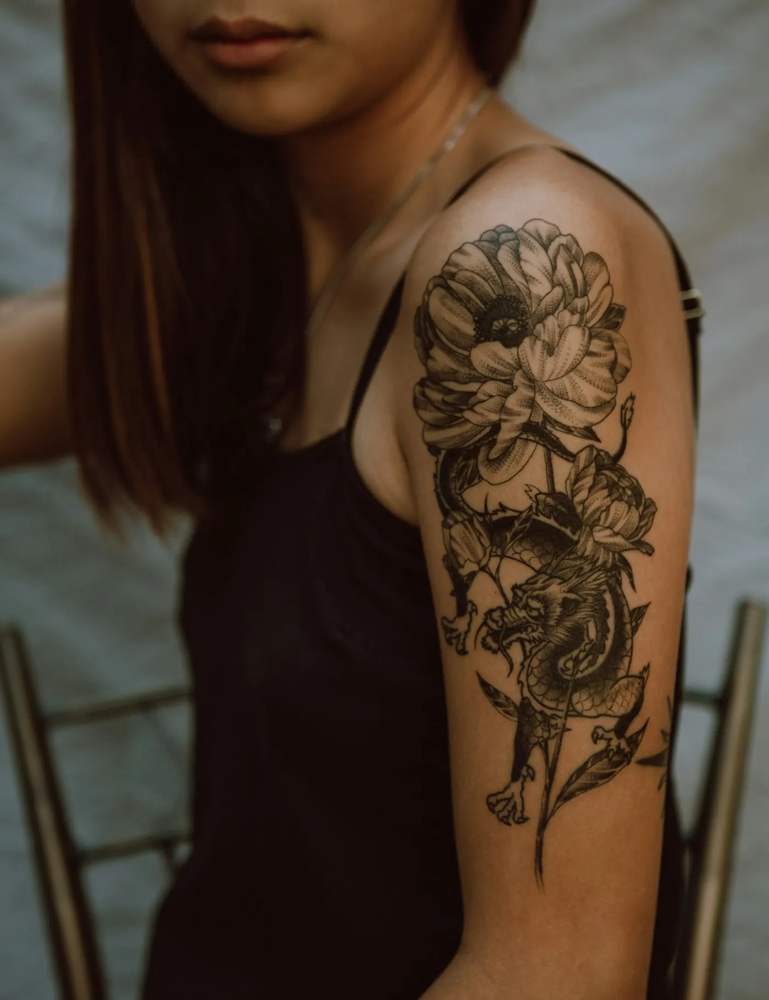
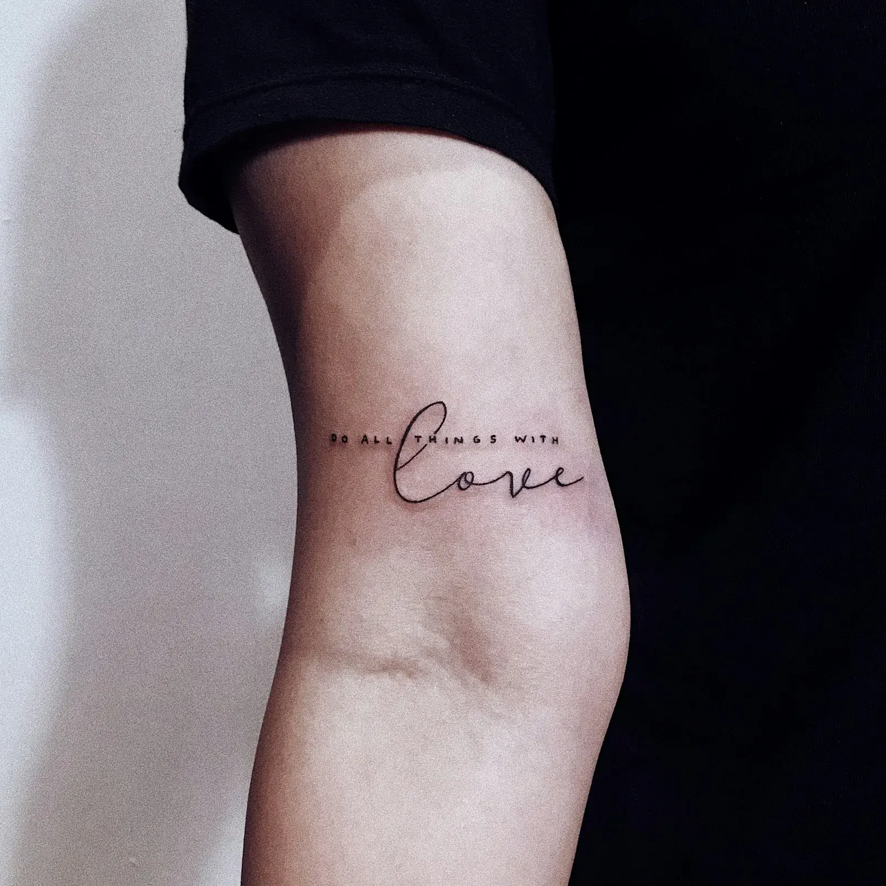
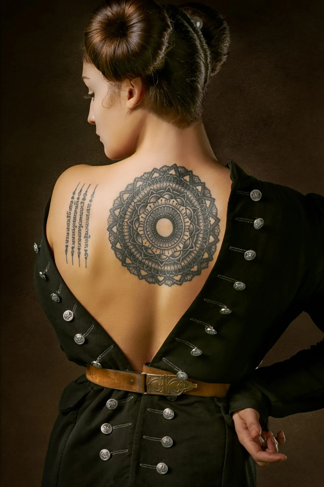
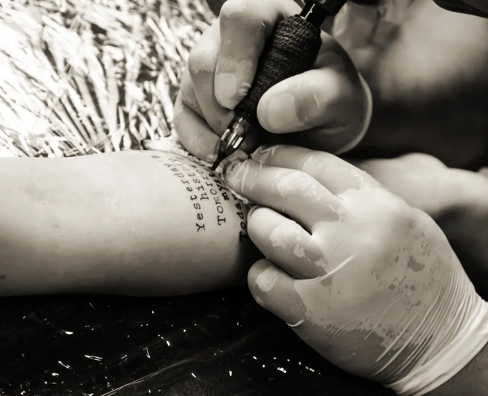
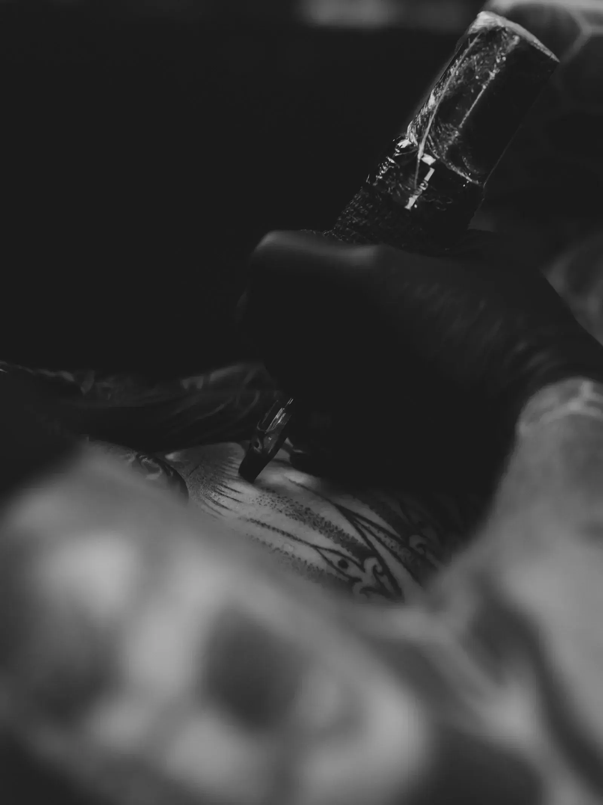
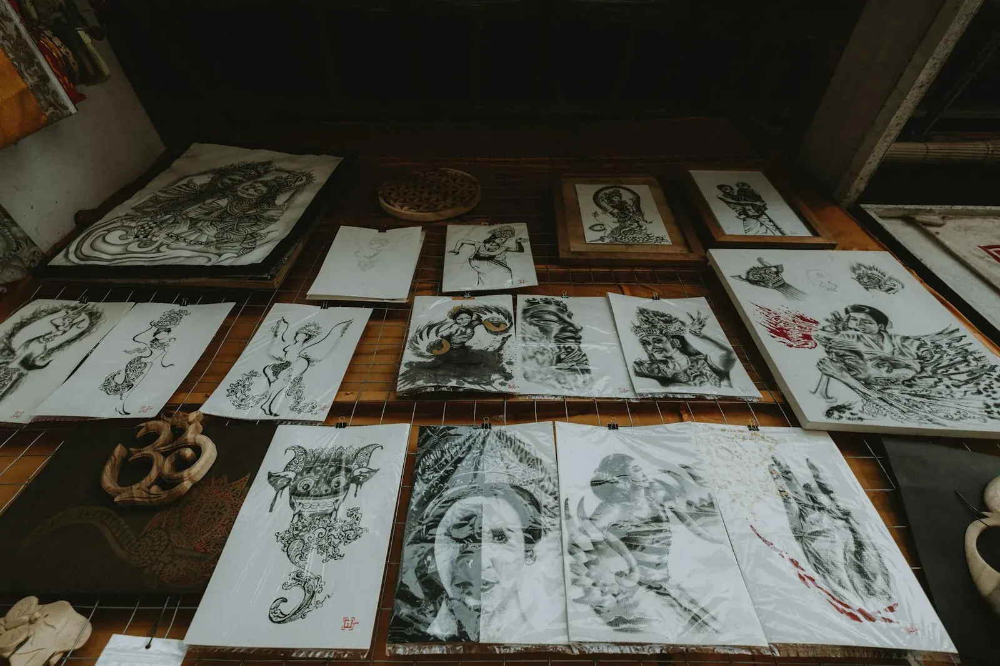
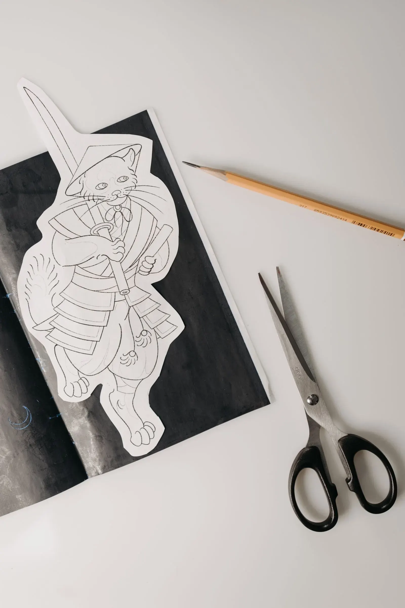

01
Bloemen en takjes
Een bloem uit je trouwboeket of een takje dat je aan thuis doet denken.
Een naam in het handschrift van iemand die je mist. Een takje, een datum, een klein teken dat alleen jij helemaal begrijpt. Bij Tattoo Ink Pistols krijgt het de tijd en de aandacht die het verdient.


Een kei in haar vak! Heel perfectionistisch.★★★★★ Google-review
In de studio werkt één artiest. Dat merk je meteen. Je vertelt wat je in gedachten hebt, zij luistert, stelt vragen en tekent het uit. Je ziet het ontwerp voor er iets gezet wordt, en je mag bijsturen tot het helemaal klopt.
Fijne lijnen vergeven weinig. Daarom wordt hier niets op goed geluk gezet: de grootte, de plek en de dikte van elke lijn worden samen bekeken. Zo blijft je tattoo ook over tien jaar mooi.
En dan is er de studio zelf. Proper, rustig, met een vriendelijke ontvangst. Klanten noemen het persoonlijk, en dat is precies de bedoeling.

Rustig en geconcentreerd, zonder haast.Achteraf krijg je uitleg over hoe je je tattoo thuis verzorgt.
Hoe kleiner de tattoo, hoe meer elke millimeter telt. Een paar dingen die ze graag zet.

Een bloem uit je trouwboeket of een takje dat je aan thuis doet denken.
Een naam, een datum of een zin in een handschrift dat je kent. Breng gerust een kaartje of briefje mee.

Een hartje, een maantje, een initiaal.

Je idee wordt eerst op papier uitgewerkt. Pas als het goed voelt, gaat de machine aan.
Kom je voor je allereerste tattoo? Dan krijg je uitleg over alles wat er gebeurt en jij bepaalt het tempo. Dit zijn de vragen die het vaakst terugkomen.

Jij bepaalt het tempoStuur een berichtje via WhatsApp met wat je graag wil, waar het moet komen en ongeveer hoe groot. Een foto, een schets of een voorbeeld helpt. Je krijgt zo snel mogelijk antwoord met een voorstel en een moment dat past.
Dat hangt af van het ontwerp. Hoe meer detail, hoe meer ruimte de lijnen nodig hebben om mooi te blijven. Samen wordt bekeken welke grootte en welke plek het beste werkt.
Zeker. Het ontwerp wordt eerst uitgetekend en daarna op je huid geplaatst. Je kijkt mee in de spiegel. Zit iets nog niet goed, dan wordt het aangepast voor er iets gezet wordt.
Je gaat naar huis met duidelijke uitleg over de verzorging. Heb je achteraf nog een vraag, dan stuur je gewoon een berichtje.
Iedereen voelt het anders, en ook de plek speelt mee. Zeg het gerust als je even wil pauzeren. Er is geen haast.
Gemiddeld uit 21 reviews van klanten die al naar huis gingen met iets moois.
Alle reviews op GoogleHeel mooi en fijn! Een kei in haar vak! Heel perfectionistisch, ik ben heel tevreden!Google-review
Persoonlijke aanpak, vriendelijke dame. Levert prachtig werk af.Google-review
Heel proper en lief. Ik ben blij met mijn tattoo, ik vind hem geweldig, heel erg bedankt.Google-review
Super vriendelijk! Heel tevreden over het resultaat!! Ik kom zeker terug ;)Google-review
Tattoos worden enkel op afspraak gezet. Stuur je idee door en je krijgt zo snel mogelijk antwoord. Liever eerst even bellen? Dat kan ook.
Ik maakte deze demo voor jullie om te tonen wat er kan. Na een kort gesprek maak ik er iets veel persoonlijkers van, helemaal naar jullie wens.
Vrijblijvend. Ik kom langs of we bellen.
Op maat, op jullie eigen domein.
Geen voorschot. Jullie betalen pas als alles klaar is.
Hosting, domeinnaam en kleine wijzigingen, zoals nieuwe openingsuren.
Omdat een voorbeeld meer zegt dan een mail. Zo zien jullie meteen wat er kan, en het kost jullie niets.
Nee. Het gesprek is vrijblijvend. Vinden jullie het niks, dan is het daarmee gedaan.
Na ons gesprek staat jullie site binnen 10 tot 14 dagen online.
Zeker. Jullie domeinnaam kan gewoon blijven, de nieuwe site komt in de plaats van de oude.
Nee, dat doe ik op basis van ons gesprek. Eigen foto's zijn mooi meegenomen, maar niet nodig om te starten.